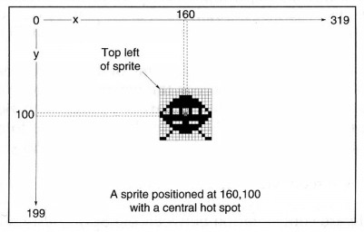
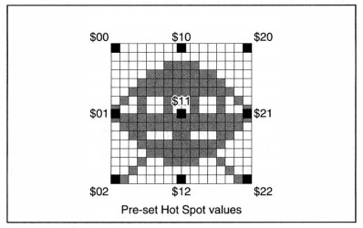

HOT SPOT
instruction: set reference point for all coordinate calculations
Hot Spot image number,x,y
Hot Spot image number,pre-set value
The HOT SPOT command sets the hot spot of an image stored in the current Object Bank. The hot spot x,y-offset is measured from the top left-hand corner of the image, and is added to those coordinates before use, as illustrated in the following diagram:
It is perfectly legal to position the hot spot outside of the current screen display. This can be used for automatic conversion of all screen coordinates, as explained above, or to set up a games sequence with Sprites appearing from off-screen.
There is another version of this instruction, allowing automatic positioning of the hot spot to any one of nine pre-set positions. These positions are shown in the following diagram, with the central point of the Object image represented by the value $11. The value for a pre-set hot spot at the top right-hand corner of the image is $20, for the bottom left-hand corner $02, and so on.
The Sprite Doctor
The final part of this Chapter contains some instant diagnoses and remedies for common Sprite
illnesses!
Problem: I can't display hardware Sprite zero. It does not want to appear.
Remedy: Hardware Sprite zero is already allocated to the mouse pointer.
Use HIDE ON to remove the mouse pointer from the screen, and try again.